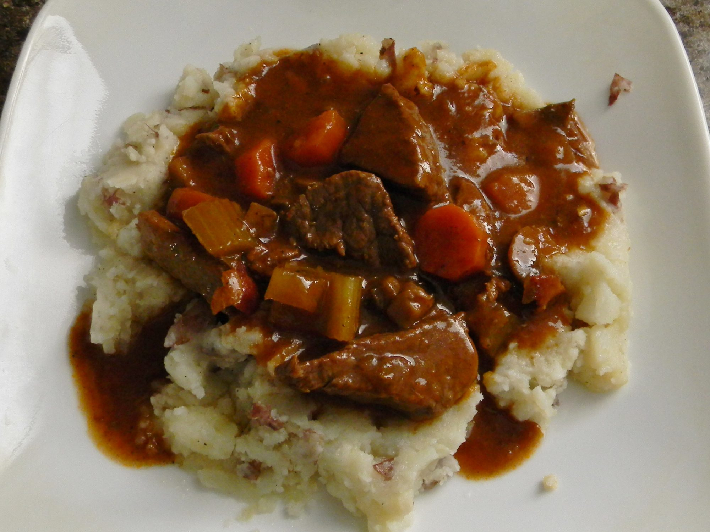

Beef and Guinness Stew

Description
The maltiness of dark beer really does amazing things for this grazy. It's a very simple dish, but at the same time it has a deep, complex, rich flavor. Great served over a bed of green onion-mashed potatoes.
Ingredients
- 4 slices bacon, cut into small pieces
- 2 1/2 pounds boneless beef chuck, cut into 2-inch pieces
- 1 teaspoon salt, or more to taste
- freshly ground black pepper to taste
- 2 onions, coasrely chopped
- 1/2 teaspon salt
- 4 cloves garlic, minced
- 1 (14.9 ounce) can dark beer (such as Guinness)
- 1/4 cup tomato paste
- 4 sprigs fresh thyme
- 3 carrots, cut into 1-inch pieces
- 2 stalks celery, cut into 1-inch pieces
- 1 teaspoon white sugar
- 1/2 teaspoon freshly ground black pepper, or to taste
- 2 1/2 cups chicken stock, or as needed to cover
- 4 cups mashed potatoes (optional)
Directions
- Cook and stir bacon in a heavy skillet over medium-high heat until bacon is browned and crisp, 3 to 4 minutes. Turn off heat and transfer bacon into a large stew pot, reserving bacon fat in the skillet.
- Season beef chuck cubes generously with 1 teaspoon salt and black pepper to taste. Turn heat to high under skillet and sear beef pieces in the hot fat on both sides until browned, about 5 minutes. Place beef in stew pot with bacon, leaving fat in skillet. Turn heat down to medium; cook and stir onions in the retained fat in the skillet until lightly browned, 5 to 8 minutes; season with a large pinch of salt.
- Cook garlic with onions until soft, about 1 minute; pour beer into skillet and stir with a wooden spoon, scraping up and dissolving any browned bits of food into the liquid. Pour cooking liquid from skillet into the stew pot. Stir in tomato paste, thyme sprigs, carrots, celery, sugar, 1/2 teaspoon black pepper, and enough chicken broth to cover.
- Cook garlic with onions until soft, about 1 minute; pour beer into skillet and stir with a wooden spoon, scraping up and dissolving any browned bits of food into the liquid. Pour cooking liquid from skillet into the stew pot. Stir in tomato paste, thyme sprigs, carrots, celery, sugar, 1/2 teaspoon black pepper, and enough chicken broth to cover.
- Remove cover and raise heat to medium-high. Bring stew to a low boil and cook until stew has slightly thickened, 15 to 20 minutes. Remove and discard thyme sprigs and adjust salt and pepper to taste.
- Arrange mashed potatoes in a ring in a serving bowl; ladle stew into the center of the potatoes.